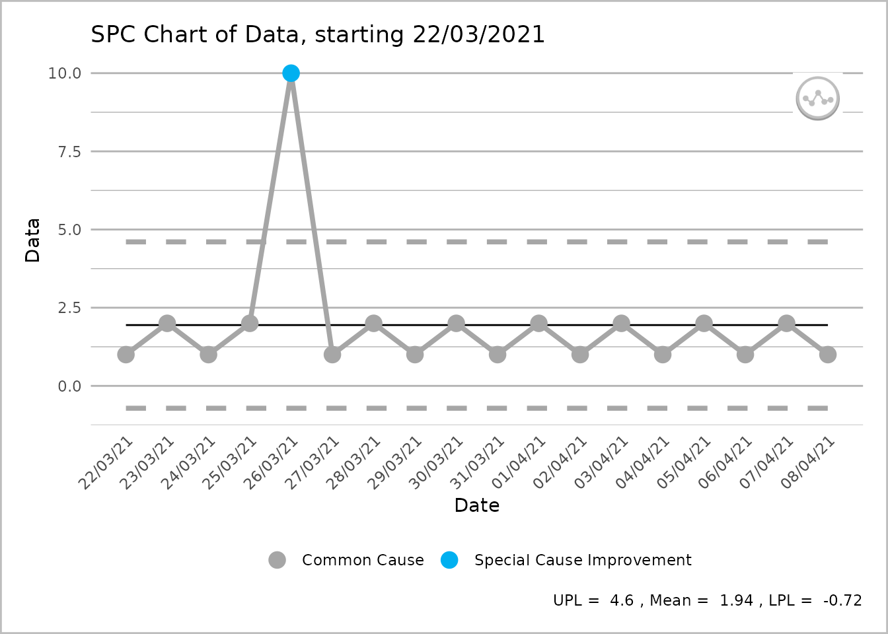
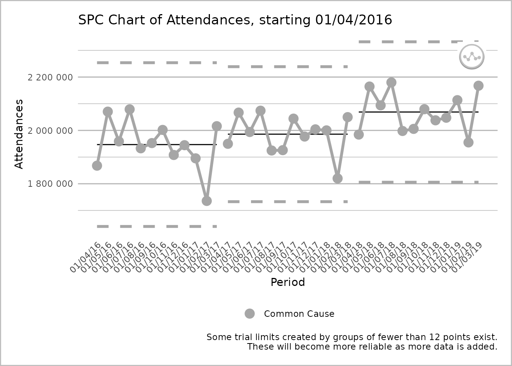

Deviations from excel defaults
deviations.RmdThe overall intent of this package is to mimic as completely as possible the output available from the NHSEI Making Data Count excel tools. However, we have identified so far one place where the R implementation should deviate from the main excel tools. We have done this only after careful consideration, and we believe there is a benefit to deviating.
In the future other small differences may also emerge. This vignette documents what these differences are, and how to set options to over-ride them, so that the output produced is identical to the excel output.
You may consider this important if for example you are publishing outputs from both the excel tool and this R tool, and need the outputs to be completely consistent.
List of Deviations
1. Treatment of outlying points
By default, this package will screen outlying points, removing them from the moving range calculation, and hence from the process limits calculation. This is in line with the published paper:
Nelson, LS, ’Shewhart charts for Individual Measurements" Journal of Quality Technology, 1982, i3, 172-173
It is discussed further in the book:
Lloyd P Provost & Sandra K Murray, The Health Care Data Guide: Learning from Data for Improvement (San Francisco, CA: Jossey-Bass, 2011), p.155 & p.192.
The Making Data Count" excel tools do not screen outlying points, and all points are included in the moving range and limits calculations. If outlying points exist, the process limits on the excel tools will therefore be wider than if outlying points were screened from the calculation.
This behaviour is controlled by the screen_outliers argument. By default, screen_outliers = TRUE.
To replicate the excel method, set the argument screen_outliers = FALSE.
The two charts below demonstrate the default, and how to over-ride to replicate the excel tools.
R Package Default:
data <- c(1, 2, 1, 2, 10, 1, 2, 1, 2, 1, 2, 1, 2, 1, 2, 1, 2, 1)
date <- seq(as.Date("2021-03-22"), by = 1, length.out = 18)
df <- tibble(data, date)
# screen_outliers = TRUE by default
spc_data <- ptd_spc(df, value_field = data, date_field = date)
spc_data %>%
plot() +
labs(
caption = paste(
"UPL = ", round(spc_data$upl[1], 2),
", Mean = ", round(spc_data$mean[1], 2),
", LPL = ", round(spc_data$lpl[1], 2))
)
Over-riding to replicate “Making Data Count” excel output:
# setting screen_outliers = FALSE produces the same output as excel
spc_data <- ptd_spc(df, value_field = data, date_field = date, screen_outliers = FALSE)
spc_data %>%
plot() +
labs(
caption = paste(
"UPL = ", round(spc_data$upl[1], 2),
", Mean = ", round(spc_data$mean[1], 2),
", LPL = ", round(spc_data$lpl[1], 2))
)
2. Breaking of lines
By default, this package will break process and limit lines when a plot is rebased. The excel tool draws all lines as continuous lines. However, rebasing is a change to the process, so by breaking lines it more clearly indicates that a change in process has happened.
This can be controlled with the break_lines argument. There are 4 possible values: * “both” (default) * “limit” (to just break the limit lines, but leave the process line connected) * “process” (to just break the process line, but leave limit lines connected) * “none” (as per the Excel tool).
Examples of these 4 are shown below:
R Package Default:
spc_data <- ae_attendances %>%
group_by(period) %>%
summarise(across(attendances, sum)) %>%
ptd_spc(attendances, period, rebase = as.Date(c("2017-04-01", "2018-04-01")))
plot(spc_data, break_lines = "both")
just breaking the limit lines:
plot(spc_data, break_lines = "limits")
just breaking the limit lines:
plot(spc_data, break_lines = "process")
Over-riding to replicate “Making Data Count” excel output:
plot(spc_data, break_lines = "none")
Find the package code on GitHub